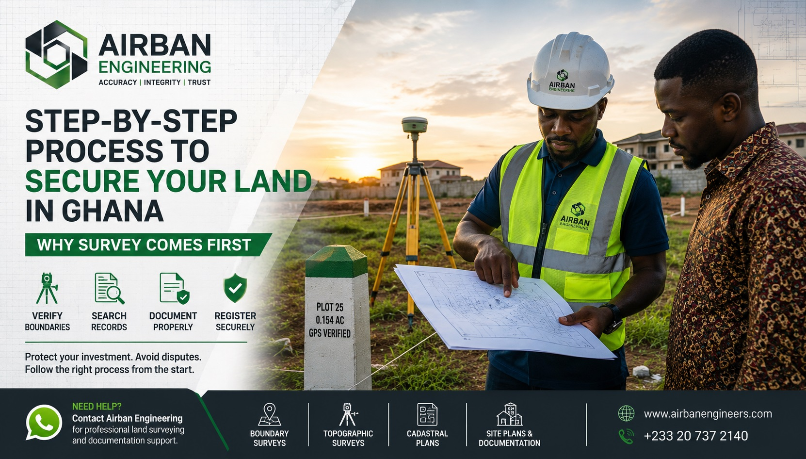

“Proper land registration starts with proper land verification.”
Buying land in Ghana without proper verification can become expensive later. Many people focus only on receipts, allocation notes or verbal assurances while ignoring the most important question: is this land properly identified, verified and documented?
A safe land acquisition process starts by understanding the land physically on the ground, not only by relying on documents handed to you.
Step 1 — Physically Inspect the Land
Before making any payment, visit the land with the seller, family representative, chief or agent involved in the transaction.
During inspection, confirm:
- The exact location of the land
- Existing boundary marks or pegs
- Whether the land is already occupied
- Signs of dispute or encroachment
- Road access and nearby developments
Step 2 — Verify the Boundaries Through a Professional Survey
This is one of the most important stages in securing land in Ghana. Many buyers skip surveying and move directly to documentation, but that can lead to overlapping land, incorrect plot sizes or disputed parcels.
A professional land survey helps:
- Confirm the true boundaries of the land
- Check for encroachment issues
- Verify dimensions and coordinates
- Prepare an accurate site or cadastral plan
- Support official search and registration processes
Step 3 — Conduct an Official Search at the Lands Commission
Once the land has been properly surveyed and identified, the next step is conducting an official search.
This helps confirm:
- Who owns the land
- Whether the land has already been registered
- If there are disputes, mortgages or government acquisition issues
- Whether the land falls within a planning scheme
Step 4 — Prepare the Proper Land Documents
Depending on the type of land involved, the transaction may require proper legal and technical documentation.
- Lease agreement or indenture
- Allocation note where applicable
- Site plan or cadastral plan
- Signatures from the appropriate family heads, chiefs or legal representatives
- Supporting identification and transaction documents
Step 5 — Stamp Duty and Validation
Stamp duty is a tax applied to legal documents that transfer ownership or interest in land. It is not simply a tax on the land itself; it relates to the transaction document that the state recognises.
In Ghana, land instruments generally need to be duly stamped before they can be registered. The amount payable depends on the value of the transaction and applicable requirements at the time.
Step 6 — Register the Land
Ghana operates land registration systems involving deeds registration and title registration, depending on the location and applicable land administration framework.
Registration may involve institutions such as:
- Lands Commission
- Survey and Mapping Division
- Land Registration Division
- Land Valuation Division
- Customary Land Secretariats where applicable
Step 7 — Protect Your Boundaries After Registration
Registration alone does not completely prevent disputes if the boundaries are ignored or poorly maintained.
Property owners should:
- Maintain visible boundary marks
- Keep copies of all land documents safely
- Avoid informal boundary changes
- Reconfirm boundaries before construction
- Seek professional help when boundary confusion arises
Final Thoughts
The safest way to secure land in Ghana is to follow a proper process: inspect the land, survey the boundaries, conduct an official search, prepare the right documents and complete registration properly.
Need Help Verifying or Securing Land in Ghana?
Airban Engineering helps clients with boundary verification, cadastral surveys, site plans, topographic surveys and land documentation support.
Send us the land location and any available documents. We’ll guide you step by step.
Chat on WhatsAppNeed professional land surveying services in Ghana? Visit our land surveying page here.